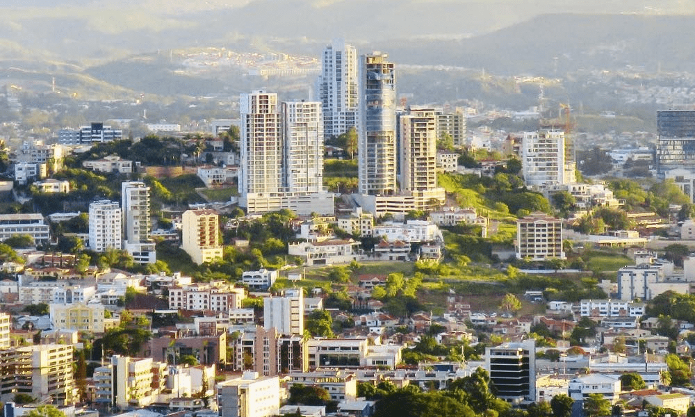

Bienvenidos a Tegucigalpa
 Tegucigalpa es la capital de Honduras. Se encuentra en un valle rodeado de montañas. Es conocida por su arquitectura colonial española bien conservada. La Plaza Morazán se encuentra en su centro y en ella está la Catedral de San Miguel Arcángel con su interior barroco.
Tegucigalpa es la capital de Honduras. Se encuentra en un valle rodeado de montañas. Es conocida por su arquitectura colonial española bien conservada. La Plaza Morazán se encuentra en su centro y en ella está la Catedral de San Miguel Arcángel con su interior barroco.
Esto incluye un sector urbano formado por las ciudades de Tegucigalpa y Comayagüela, muy comúnmente denominada área metropolitana de Tegucigalpa y Comayagüela o Distrito Central (no confundir con el municipio), que forma parte de las más pobladas de centroaméria y que está divida en 892 barrios y colonias.

Teniendo una extensión territorial aproximada de 1,514 km², está conformado por 43 aldeas y 538 caseríos registrados en el Censo Nacional de Población y Vivienda de 2013, el código de identificación geográfica de Distrito Central, Francisco Morazán es 0801.
El Museo para la Identidad Nacional recorre la historia del país y también incluye un recorrido virtual de las ruinas mayas de Copán, al oeste de Honduras.